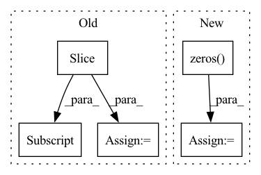

Pattern ID :36882
Before Change
seq_length = seg.size(1)
device = seg.device
emb = self.pe[: seq_length] .transpose(0, 1)
return emb.to(device)
After Change
device = src.device
no_pad_num = (src != 0).sum(dim=-1)
emb = torch.zeros( batch_size, seq_length, self.emb_size)
for i in range(batch_size):
emb[i, :no_pad_num[i], :] = self.emb[2: no_pad_num[i]+2]
return emb.to(device)In pattern: SUPERPATTERN
Frequency: 3
Non-data size: 5
Instances Fragment ID: 105007842
Project Name: tencent/tencentpretrain
Commit Name: 2bc6d47065d7a5e6907d449cf5114248000274fe
Time: 2022-12-16
Author: 40569026+JINGZIjingzi@users.noreply.github.com
File Name: tencentpretrain/embeddings/sinusoidalpos_embedding.py
M Class Name: SinusoidalposEmbedding
N Class Name: SinusoidalposEmbedding
M Method Name: forward(3)
N Method Name: forward(3)
M Parent Class: nn.Module
N Parent Class: nn.Module
M File Name: tencentpretrain/embeddings/sinusoidalpos_embedding.py
N File Name: tencentpretrain/embeddings/sinusoidalpos_embedding.py
M Start Line: 45
M End Line: 47
N Start Line: 55
N End Line: 68
Before Change
noisy_wavs, (batch_size * num_blocks, 16384, 1)
)
zeros = torch.zeros(batch_size, num_blocks * 16384, 1)
zeros[:, :wav_size, :] = clean_wavs
clean_wavs = zeros.clone()
clean_wavs = torch.reshape(
clean_wavs, (batch_size * num_blocks, 16384, 1)
)
After Change
self.original_len = clean_wavs.shape[1]
// Add padding to make sure all the signal will be processed.
padding_elements = torch.zeros(
clean_wavs.shape[0], hparams["chunk_size"], device=clean_wavs.device
)
clean_wavs = torch.cat([clean_wavs, padding_elements], dim=1)
noisy_wavs = torch.cat([noisy_wavs, padding_elements], dim=1)
// Split sentences in smaller chunks Fragment ID: 105007872
Project Name: speechbrain/speechbrain
Commit Name: c91d417913af7aef5b1cf8937fb9d14754b5daa4
Time: 2021-07-13
Author: mirco.ravanelli@gmail.com
File Name: recipes/Voicebank/enhance/SEGAN/train.py
M Class Name: SEBrain
N Class Name: SEBrain
M Method Name: evaluate_batch(3)
N Method Name: evaluate_batch(3)
M Parent Class: sb.Brain
N Parent Class: sb.Brain
M File Name: recipes/Voicebank/enhance/SEGAN/train.py
N File Name: recipes/Voicebank/enhance/SEGAN/train.py
M Start Line: 235
M End Line: 253
N Start Line: 235
N End Line: 255
Before Change
mask = paddle.where(mask_cond, paddle.full(mask_cond.shape, 0), mask)
if past_key_values_length > 0:
mask[:, :past_key_values_length] = False
expanded_mask = mask.unsqueeze(0).expand([batch_size, target_length, target_length + past_key_values_length])
return expanded_mask
After Change
mask = masked_fill(mask, mask_cond < (mask_cond + 1).reshape([mask.shape[-1], 1]), 0)
if past_key_values_length > 0:
mask = paddle.concat([paddle.zeros( target_length, past_key_values_length) , mask], axis=-1)
return mask[None, None, :, :].expand([batch_size, 1, target_length, target_length + past_key_values_length])
Fragment ID: 105007863
Project Name: paddlepaddle/paddlenlp
Commit Name: 5f01f073ed6e140743170652b201c16356350dc7
Time: 2023-04-13
Author: 40840292+linjieccc@users.noreply.github.com
File Name: paddlenlp/transformers/llama/modeling.py
M Class Name: AnonimousClass
N Class Name: AnonimousClass
M Method Name: _make_causal_mask(3)
N Method Name: _make_causal_mask(3)
M Parent Class:
N Parent Class:
M File Name: paddlenlp/transformers/llama/modeling.py
N File Name: paddlenlp/transformers/llama/modeling.py
M Start Line: 96
M End Line: 106
N Start Line: 101
N End Line: 109